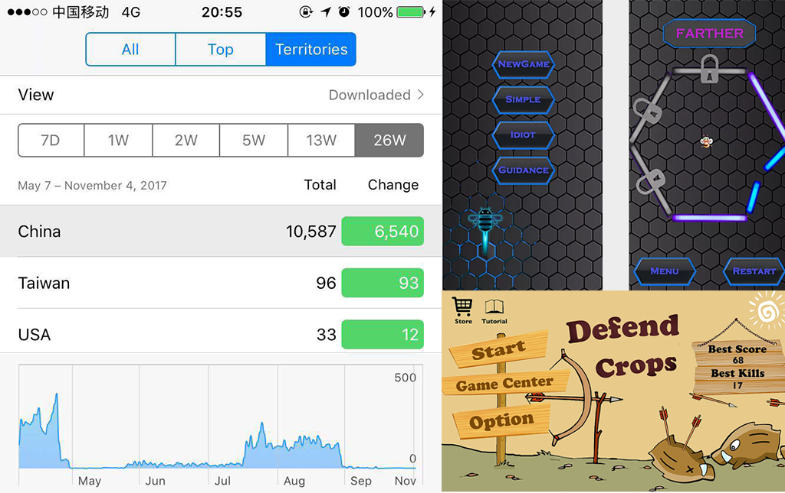

About Me
I'm currently a Postdoctoral Research Scientist at MReaL
Lab, Nanyang Technological University from 2022,
working with Prof. Hanwang Zhang.
I obtained my Ph.D. at Nanyang Technological University
in 2022, advised by Prof. Hanwang
Zhang as well.
Prior to the Ph.D., I received B.E. degree in Computer Science from IEEE Pilot Class
at Shanghai Jiao Tong University (SJTU) in 2015,
and dual-master degree in Computer Science from the joint programme of SJTU and Waseda
University in 2018,
advised by Prof. Seiichiro Kamata and Prof. Lizhuang Ma.
My research mainly focuses on learning unbiased models against the distribution shift in computer vision, vision
& language, incremental learning, noise identification, etc. As a previous game engineer, my lifelong dream is to (1) use machine learning to create something fun, (2) build interactive,
personalized, and engaging NPC that can be used to enable an immersive virtual world. If you feel that I can
help with your related projects, please don't hesitate to contact me.
News
- 07/2022 : We are organizing the 2st Causality in Vision Workshop at ECCV 2022
- 07/2022 : I was recognized as an outstanding reviewer (Top 10%) for ICML 2022
- 07/2022 : Three Papers (One Oral) were accepted to ECCV 2022
- 12/2021 : I successfully defended my Ph.D. thesis. I'd like to thank everyone who has helped me in the past 3 years
- 05/2021 : Received the Silver Award in 2021 PREMIA Best Student Paper Award
- 03/2021 : Selected as one of the 2021 Alibaba Outstanding Interns in Academic Cooperation
- 03/2021 : We organized the 1st Causality in Vision Workshop at CVPR 2021
- 01/2021 : Two Papers were accepted to CVPR 2021
Publications
European Conference on Computer Vision (ECCV 2022).
European Conference on Computer Vision (ECCV 2022, Oral).
European Conference on Computer Vision (ECCV 2022).
IEEE Conference on Computer Vision and Pattern Recognition (CVPR 2021).
IEEE Conference on Computer Vision and Pattern Recognition (CVPR 2021).
IEEE Transactions on Multimedia (TMM 2021).
Conference on Neural Information Processing Systems (NeurIPS 2020).
IEEE Conference on Computer Vision and Pattern Recognition (CVPR 2020, Oral).
IEEE Conference on Computer Vision and Pattern Recognition (CVPR 2020).
IEEE Conference on Computer Vision and Pattern Recognition (CVPR 2019, Oral & Best
Paper Finalists [45/5160]).
IEEE Conference on Computer Vision and Pattern Recognition (CVPR 2019, Oral).
Asian Conference on Computer Vision (ACCV 2016).
Projects

This project aims to build a new CODEBASE for Scene Graph Generation (SGG), and it is also a Pytorch
implementation of the paper "Unbiased Scene Graph Generation from Biased Training". It is built on top of
the well-known maskrcnn-benchmark and defines relationship prediction as an additional roi_head. Moreover,
I included all the exsiting metrics: R@K, mR@K, ngR@K, zR@K, to benchmark the SGG.

This project provides a strong single-stage baseline for Long-Tailed Classification (under ImageNet-LT,
Long-Tailed CIFAR-10/-100 datasets), Detection, and Instance Segmentation (under LVIS dataset). It is also
a PyTorch implementation of the NeurIPS 2020 paper Long-Tailed Classification by Keeping the Good and
Removing the Bad Momentum Causal Effect. This project can be easily generalized to other tasks with
unbalanced datasets.

An open-source visual question answering (VQA) CODEBASE built on top of the bottom-up-attention-vqa. It
integrates several popular VQA papers published in 2018, which includes: bottom-up top-down, bilinear
attention network, learning to count, learning conditioned graph structures, intra- and inter-modality
attention.

Indie Game Development
Out of interest, I independently developed several mobile games on Iphone. They have been downloaded over
10k times on Apple store in half a year.
Awards
Academic Services
Organizing Committees
1st Causality in Vision
Workshop at CVPR 2021
2st Causality in Vision Workshop at ECCV
2022
Talks and Blogs
Invited Talk : To TechBeat, Hosted by TechBeat AI Community, Online Sharing, 2022.10
Invited Talk : To Kuaishou, Recommendation System
Group, Beijing, 2021.07
Invited Talk : To Fudan
University, Department of CS, Hosted by Asso Prof.Jingjing Chen, Shanghai, 2021.07
Invited Talk : To The Lab for Media Search
(LMS), NUS, 2021.06
Invited Talk : To VALSE Webinar (volume 20-29), Hosted by Prof.Meng Yang, Online, 2020.12
Invited Talk : To Causal AI Reading Group, Jointly Hosted by Swarma Club and BAAI Hub, 2020.12
Invited Talk : To Jishi Community, Hosted by Jishi
Team, BiliBili, 2020.12
Invited Talk : To Alibaba Group, Hosted by Tianchi Team from Alibaba Cloud, Hangzhou, China, 2020.11
Invited Talk : To Jiantao Jiao's
Lab, Hosted by Ph.D. Banghua Zhou, UC Berkeley, 2020.10
Blogs : Sharing Research Experiences at Zhihu, Language: Chinese
Paper Review
CVPR, ECCV, ICCV, WACV, NeurIPS, ICLR, ICML, AAAI, TPAMIExperience
Alibaba, DAMO Academy, Research Intern (2019.7 - 2021.11)
Major topic: Robust Machine LearningMentor: Mingyuan Tao, Chang Zhou, Jianqiang Huang
Tencent, AI Lab, Research Intern (2018.3 - 2018.6)
Major topic: Scene Graph GenerationMentor: Wenhan Luo, Baoyuan Wu, Wei Liu
Mihoyo, Software Engineer Intern (2017.4 - 2017.12)
Mobile Game Development Using Unity 3D.Toshiba, Research & Development Intern (2015.8 - 2015.9)
Major Project: Scenery Image Stitching and Inpainting.Mentor: Kaoru Matsuoka
Speech Lab Intern, SJTU (2014.3 - 2014.9)
Major Project: Leading a team to develop an Android App for unlocking the screen by Voice Recognition.Mentor: Kai Yu